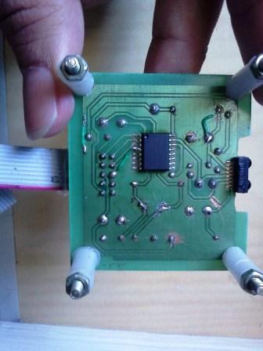

Electronics freak, hardware tinkerer, movie buff, android lover and blogger
The full name of the project is Optical Cense: Wireless Optical Sensor Network Design for a Conducting Chamber.
I had to design sensor nodes to put in a conducting camber of a nuclear fusion reactor and the communication between the nodes was done using IR instead of RF. The benefit of Infrared communications is that it is Line of sight communication and does not suffer from multi path fading effects.
I and my colleague are working on this project since last 2 months and are doing progress. Firstly, we tested the nodes which were build by our senior who was working on this project. Now, we are using a new IC and testing the nodes again. We are using NVRAM along with ATMega1281 microcontroller. Also, temperature sensor, light sensor and camera module are present on the board. Making a new schematic and fabricating the board is in progress. We are also developing a new protocol to test the nodes.
The images below show the board which we used for testing the nodes at 115.2 kbps. The IR transceivers follow IrDA protocol and care has to be taken which using the modulator/demodulator chip.
